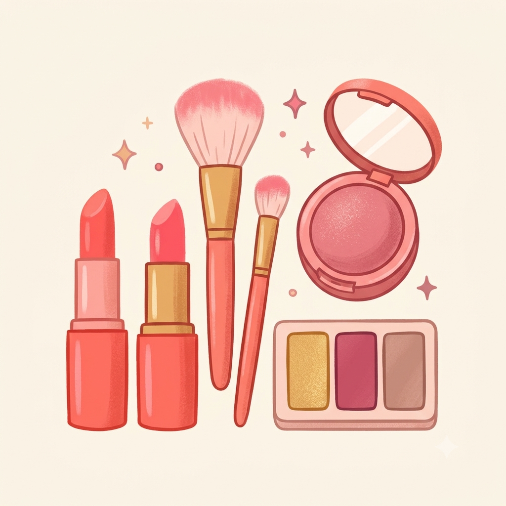

Boas-vindas ao meu Blog!
Por: Maria Clara Lino Kotos
Boas-vindas ao meu novo blog! Aqui vou compartilhar sobre o universo da maquiagem, resenhas dos meus produtos favoritos e truques para o dia a dia.
Vou compartilhar sobre tendências, tutoriais e dicas incríveis de beleza!

Por: Maria Clara Lino Kotos
Boas-vindas ao meu novo blog! Aqui vou compartilhar sobre o universo da maquiagem, resenhas dos meus produtos favoritos e truques para o dia a dia.
Por: Maria Clara Lino Kotos
Uma boa maquiagem começa nos cuidados com a pele! Lave bem o rosto, aplique um hidratante e não se esqueça do protetor solar para um acabamento impecável.